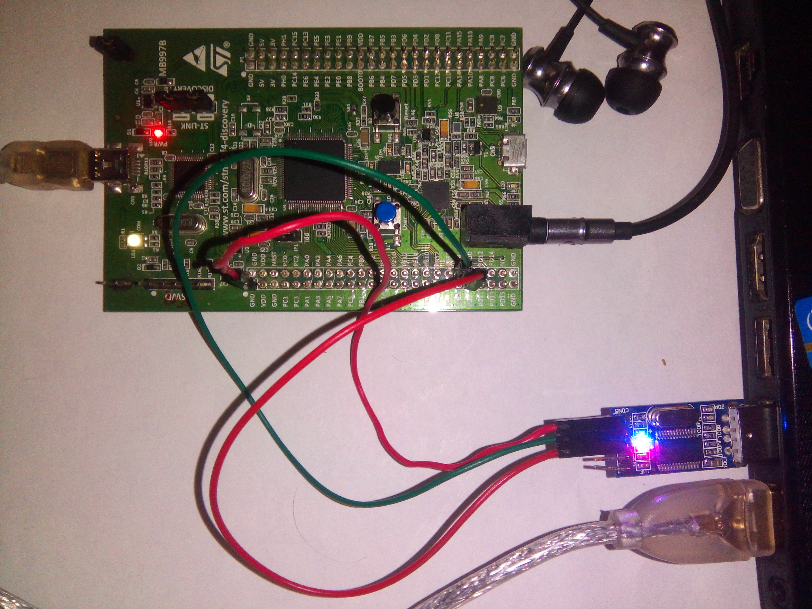
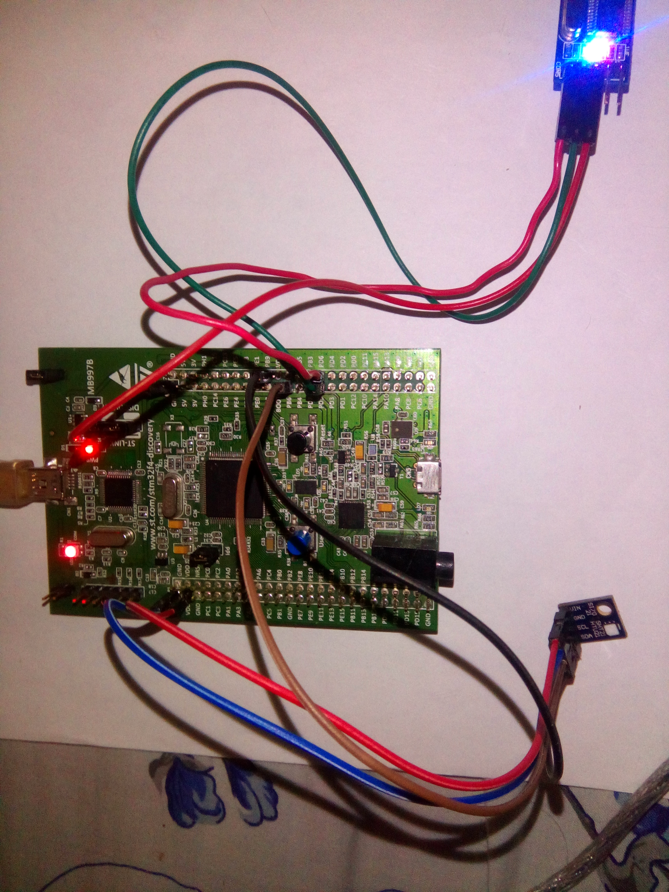

Examples¶
theCore examples are organized in a form of separate projects that can be extracted and used as a base for custom application.
Examples are of two types. First is standalone example, placed in
the separate repository for convenience. For such, in each section you will
find a reference to the project location. Second type of examples is in-source
examples, placed under examples directory within theCore source tree.
Initial setup¶
Before any example can be built, an appropriate development environment must be configured either manually by installing packages like toolchains or by using Nix.
Using Nix is recommended. The Getting started section contains the explanation about how to install and run Nix.
To manually install required software without Nix (not recommended), refer to Getting required development packages without Nix section. There you will find some insights about getting hand-made development environment.
STM32F4 discovery blinky project¶
The example runs on Discovery kit with STM32F407VG MCU and demonstrates simple project that uses onboard LEDs.
Refer to the dedicated repository to check how to build and run the example.
Simple host hello world example¶
| Location: | examples/host_hello |
|---|---|
| Target: | host |
| External HW: | none |
| Toolchain: | gcc/g++ v5.2 or newer |
| Additional SW: | none |
This example shows theCore running on the host target. By host target is understood an environment capable to both compile and run theCore applications.
Application demonstrates a console stream usage and a simple assertion.
Building¶
Complete Initial setup section.
Execute build commands:
cd examples/host_hello mkdir build cd build cmake .. make
Expected output¶
Hello, Host World!
This is an assert demonstration. Application will abort.
hello: /home/user/projects/thecore/examples/host_hello/main.cpp:7: int main(): Assertion `1 == 0' failed.
Aborted (core dumped)
STM32F4 discovery audio example with CS43L22 audio DAC¶
| Location: | examples/cs43l22_audio |
|---|---|
| Target: | STM32F4 Discovery board |
| External HW: | UART-to-USB converter attached to the USART3, headphones |
| Toolchain: | GNU arm-none-eabi v.5.2 or newer |
| Additional SW: | openocd, minicom |
Attach any preferable UART-to-USB converter such as this module according to following pinout:
PD8 (USART3 TX) module’s RX PD9 (USART3 RX) module’s TX GND module’s GND
{kind=link}
Below is the example wiring.
Building¶
Complete Initial setup section.
Execute build commands. The CMake Toolchain file is required to build this application. theCore already has one suitable for this target.
cd examples/cs43l22_audio mkdir build cd build cmake -DCMAKE_TOOLCHAIN_FILE=../../../toolchains/arm-cm4-gnu.cmake ..
Running¶
Firmware will be flashed via openocd and gdb.
Connect stm32f4 Discovery board to USB cable and connect USB <-> UART converter to the PC.
Launch
openocdin the separate terminal using script provided by theCore. Alternatively, you can use script from openocd installation.# From new terminal cd path/to/theCore openocd -f ./scripts/stm32f4discovery.cfg
Launch
minicomwith device associated with USB <-> UART converter. (/dev/ttyUSB0here used as an example):# From new terminal minicom -D /dev/ttyUSB0
Provided that your main terminal’s current directory is
build, launchgdb:# From the build directory arm-none-eabi-gdb audio
Under GDB shell, connect to
openocdand flash firmware:(gdb) target remote :3333 Remote debugging using :3333 0x00000000 in ?? () (gdb) monitor reset halt target state: halted target halted due to debug-request, current mode: Thread xPSR: 0x01000000 pc: 0x08000188 msp: 0x20020000 (gdb) load Loading section .text, size 0x4724 lma 0x8000000 Loading section .init_array, size 0xc lma 0x8004724 Loading section .rodata, size 0x228 lma 0x8004730 Loading section .data, size 0x24 lma 0x8004958 Start address 0x8000188, load size 18812 Transfer rate: 14 KB/sec, 3762 bytes/write.
Start new firmware:
(gdb) continue Continuing.
Attach headphones to the audio jack on Discovery board.
Expected output¶
In minicom you should be able to see:
Welcome to theCore
Playing audio sample...
In headphones you should hear cool 8-bit sound.
STM32F4 discovery and HTU21D temperature and humidity sensor¶
| Location: | examples/htu21d |
|---|---|
| Target: | STM32F4 Discovery board |
| External HW: | UART-to-USB converter attached to the USART2, HTU21D sensor |
| Toolchain: | GNU arm-none-eabi v.5.2 or newer |
| Additional SW: | openocd, minicom |
Wiring¶
Connect HTU21D to I2C1 on the Discovery board using following pins:
PB6 (I2C1 SCL) sensor’s SCL PB9 (I2C1 SDA) sensor’s SDA +3.3V sensor’s VDD GND sensor’s GND Attach any preferable UART-to-USB converter such as this module according to following pinout:
PD5 (USART2 TX) module’s RX PD6 (USART2 RX) module’s TX GND module’s GND
Below is the example wiring.
Building¶
Complete Initial setup section.
Execute build commands. The CMake Toolchain file is required to build this application. theCore already has one suitable for this target.
cd examples/htu21d mkdir build cd build cmake -DCMAKE_TOOLCHAIN_FILE=../../../toolchains/arm-cm4-gnu.cmake ..
Running¶
Firmware will be flashed via openocd and gdb.
Connect stm32f4 Discovery board to USB cable and connect USB <-> UART converter to the PC.
Launch
openocdin the separate terminal using script provided by theCore. Alternatively, you can use script from openocd installation.# From new terminal cd path/to/theCore openocd -f ./scripts/stm32f4discovery.cfg
Launch
minicomwith device associated with USB <-> UART converter. (/dev/ttyUSB0here used as an example):# From new terminal minicom -D /dev/ttyUSB0
Provided that your main terminal’s current directory is
build, launchgdb:# From the build directory arm-none-eabi-gdb htu21d_example
Under GDB shell, connect to
openocdand flash firmware:(gdb) target remote :3333 Remote debugging using :3333 0x00000000 in ?? () (gdb) monitor reset halt target state: halted target halted due to debug-request, current mode: Thread xPSR: 0x01000000 pc: 0x08000188 msp: 0x20020000 (gdb) load Loading section .text, size 0x7678 lma 0x8000000 Loading section .data, size 0x3c lma 0x8007678 Start address 0x800477c, load size 30388 Transfer rate: 18 KB/sec, 10129 bytes/write.
Start new firmware:
(gdb) continue Continuing.
Watch console output.
Expected output¶
In minicom you should be able to see:
Welcome to theCore
Starting HTU21D sensor...
Reset done
Temperature: 21.722 Celsius Humidity: 40.882%
Temperature: 21.712 Celsius Humidity: 40.859%
Temperature: 21.701 Celsius Humidity: 40.852%
...
STM32F4 discovery and external interrupts from user button¶
| Location: | examples/stm32f4_exti |
|---|---|
| Target: | STM32F4 Discovery board |
| External HW: | UART-to-USB converter attached to the USART3 |
| Toolchain: | GNU arm-none-eabi v.5.2 or newer |
| Additional SW: | openocd, minicom |
EXTI - the external interrupt.
An external interrupt is a computer system interrupt that happens as a result of outside interference, whether that’s from the user, from peripherals, from other hardware devices or through a network. These are different than internal interrupts that happen automatically as the machine reads through program instructions.
In this application, one particular type of external interrupt is used: GPIO line interrupt. When voltage level changes on the line (e.g. when button is pressed), interrupt is generated.
Wiring¶
Attach any preferable UART-to-USB converter such as this module according to following pinout:
PD8 (USART3 TX) module’s RX PD9 (USART3 RX) module’s TX GND module’s GND
Below is the example wiring.

Building¶
Complete Initial setup section.
Execute build commands. The CMake Toolchain file is required to build this application. theCore already has one suitable for this target.
cd examples/stm32f4_exti mkdir build cd build cmake -DCMAKE_TOOLCHAIN_FILE=../../../toolchains/arm-cm4-gnu.cmake ..
Running¶
Firmware will be flashed via openocd and gdb.
Connect stm32f4 Discovery board to USB cable and connect USB <-> UART converter to the PC.
Launch
openocdin the separate terminal using script provided by theCore. Alternatively, you can use script from openocd installation.# From new terminal cd path/to/theCore openocd -f ./scripts/stm32f4discovery.cfg
Launch
minicomwith device associated with USB <-> UART converter. (/dev/ttyUSB0here used as an example):# From new terminal minicom -D /dev/ttyUSB0
Provided that your main terminal’s current directory is
build, launchgdb:# From the build directory arm-none-eabi-gdb htu21d_example
Under GDB shell, connect to
openocdand flash firmware:(gdb) target remote :3333 Remote debugging using :3333 0x00000000 in ?? () (gdb) monitor reset halt target state: halted target halted due to debug-request, current mode: Thread xPSR: 0x01000000 pc: 0x08000188 msp: 0x20020000 (gdb) load Loading section .text, size 0x4724 lma 0x8000000 Loading section .init_array, size 0xc lma 0x8004724 Loading section .rodata, size 0x228 lma 0x8004730 Loading section .data, size 0x24 lma 0x8004958 Start address 0x8000188, load size 18812 Transfer rate: 14 KB/sec, 3762 bytes/write.
Start new firmware:
(gdb) continue Continuing.
Press blue user button on the Discovery board and observe output in
minicom.
Expected output¶
Before button press:
Welcome to theCore
Hello, Embedded World!
After each button press:
Button pressed!
TM4C123G LaunchPad blinky¶
Note
This section is under construction.